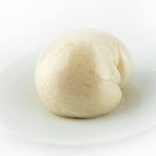

Iyan

Iyan
Description
Iyan (or pounded yam) is a delicacy common among the yoruba ethnic group of south west Nigeria.
It is a swallow food made from pounding cooked yam
Ingredients
Steps
- Cut the yam into medium sized cubes and peel the back
- Rinse the yam in clean water
- Put in boiling water and allow to cook till it is moderately soft
- Transfer boiled yam into Mortar and beat/pound till
it's smooth and soft with Pestle
- Serve